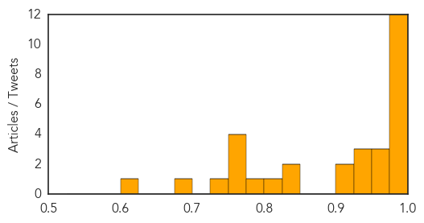

Hepatitis
30-Day Web Trend
4 alerts, 1 warnings

30-Day Twitter Trend
0 alerts, 0 warnings

Article Locations

Article Confidences

Top Articles:
- 0.962
- These shots aren’t just for kids
- 0.853
- Wartime Glasgow study offers hope in Hepatitis C battle
- 0.766
- SGH to screen 350 more patients for hepatitis C, Health News & Top Stories
- 0.691
- Research links bovine leukosis, breast cancer
- 0.659
- Awareness and timely management key to bring down Acute Liver Failure (ALF) mortality: Experts
Top Tweets:
-
No tweets found for Oct 29, 2015
Influenza
30-Day Web Trend
7 alerts, 0 warnings

30-Day Twitter Trend
0 alerts, 0 warnings

Article Locations

Article Confidences
Top Articles:
- 1.000
- The truth about flu vaccines – The Westside Gazette
- 0.999
- Victims Crippled and Killed by the Flu Shot Compensated by U.S. Government
- 0.997
- STATE HEALTH OFFICIALS ANNOUNCE FIRST INDIANA INFLUENZA DEATH OF 2015-16 SEASON
- 0.995
- Flu vaccine effectiveness reduced by use of statins
- 0.991
- Flu shots make sense
- 0.989
- State Health Department: First flu death of season hits Indiana
- 0.987
- Studies raise questions about impact of statins on flu vaccination in seniors
- 0.985
- County hosts flu shot clinics
- 0.981
- Studies raise questions about impact of statins on flu vaccination in seniors
- 0.980
- Clinics are opening for flu season
- 0.977
- Why the CDC pushes flu season fear like clockwork: $1.6 billion in annual revenue for Big Pharma
- 0.975
- Statins could stop flu jab from working properly and put elderly at risk, scientists warn
- 0.973
- Flu season arrives; health professionals gearing up for rush
- 0.970
- Do statins reduce the effectiveness of flu jabs?
- 0.957
- Pregnant Nurse Fired For Refusing Toxic Flu Shot
- 0.945
- Influenza virus identified in European Union nations
- 0.934
- Statins may lessen impact of flu vaccination in elderly
- 0.927
- Statins could interfere with flu jab, studies suggest
- 0.925
- Flu vaccinations appear less effective for people taking statins
- 0.908
- Statins may reduce effectiveness of flu jab
- 0.848
- Today's stories from newspapers in Belleville Region
- 0.848
- Today's stories from newspapers in Caledon
- 0.800
- Today's stories from newspapers in Ottawa
- 0.785
- Today's stories from newspapers in Ottawa Valley
- 0.753
- Tuberculosis disease explodes in Australians’ favourite holiday spots, WHO report shows
- 0.751
- October 29, 2015 Archives
- 0.751
- October 29, 2015 Archives
- 0.751
- October 28, 2015 Archives
- 0.732
- Tuberculosis disease explodes in Australians’ favourite holiday spots, WHO report shows
- 0.689
- The vaccine industry's war on women
- 0.618
- Bad Science Watch: Sellers of Homeopathic Flu Remedies Spreading Lies and Misinformation
Top Tweets:
-
No tweets found for Oct 29, 2015